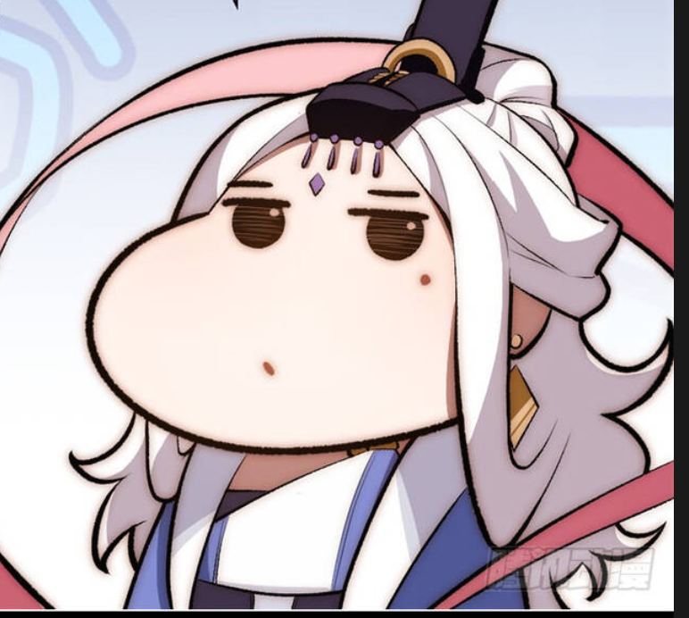

12 vị thần là những vị thần chính trong điện thờ của người Hy Lạp, cai trị trên đỉnh Olympus. Các vị thần đỉnh Olympus giành quyền thống trị sau khi Zeus lãnh đạo các vị thần giành chiến thắng trong trận chiến với các Titan. Tài liệu cổ xưa nhất về các nghi thức tôn giáo với các vị thần được tìm thấy trong các bài thơ Homer ca tụng Hermes. Sự sùng bái mười hai vị thần đỉnh Olympus của người Hy Lạp có thể bắt nguồn từ thế kỷ thứ VI TCN ở thành Athens và gần như không có tiền lệ vào thời kỳ văn hóa Mycenae. Việc thờ phụng mười hai vị thần Olympus thường được xác định bắt đầu vào thời gian Pesistratos lên nhiếp chính ở thành Athens, vào năm 522/521 TCN.  Hệ thống La Mã tương ứng của Ennius đặt tên La Mã tương đương cho những vị thần Hy Lạp,[1] nhưng thay thế Dionysus (Bacchus) bằng Hestia (Vesta) vì thế danh sách có sáu nam thần và sáu nữ thần. Herodotus đưa vào danh sách của ông các vị thần sau: Zeus, Hera, Poseidon, Hermes, Athena, Apollo, Alpheus, Cronus, Rhea và các nữ thần Charites.[2][3] Herodotus cũng đề cập đến Heracles trong danh sách.[4] Lucian cũng kể đến Heracles Asclepius là thành viên của mười hai vị thần, tuy nhiên không giải thích hai vị thần nào đã phải nhường vị trí cho họ. Ở đảo Kos, Heracles và Dionysus được đưa vào danh sách, Ares và Hephaestus thì không.[5] Hebe, Helios, Eros (Cupid), Selene và Persephone cũng là những vị thần quan trọng đôi khi được kể vào nhóm mười hai vị thần. Eros thường được miêu tả cùng với mười hai bị thần kia, đặc biệt với mẹ là Aphrodite, nhưng hiếm khi được công nhận là một trong số các vị thần trên đỉnh Olympus. Plato đã liên hệ mười hai vị thần đỉnh Olympus với mười hai tháng trong năm, và đề nghị tháng cuối cùng đặc biệt vinh dự dành riêng cho Hades và những linh hồn đã chết, ám chỉ ông tính Hades là một trong số mười hai vị thần.[6] Hades dần bị rút tên ra khỏi nhóm này vì liên quan đến âm phủ.[1] Trong Phaedrus Plato xếp mười hai vị thần tương ứng với các cung Hoàng đạo và loại bỏ Hestia ra khỏi sự sắp xếp đó.[7]
12 vị thần là những vị thần chính trong điện thờ của người Hy Lạp, cai trị trên đỉnh Olympus. Các vị thần đỉnh Olympus giành quyền thống trị sau khi Zeus lãnh đạo các vị thần giành chiến thắng trong trận chiến với các Titan. Tài liệu cổ xưa nhất về các nghi thức tôn giáo với các vị thần được tìm thấy trong các bài thơ Homer ca tụng Hermes. Sự sùng bái mười hai vị thần đỉnh Olympus của người Hy Lạp có thể bắt nguồn từ thế kỷ thứ VI TCN ở thành Athens và gần như không có tiền lệ vào thời kỳ văn hóa Mycenae. Việc thờ phụng mười hai vị thần Olympus thường được xác định bắt đầu vào thời gian Pesistratos lên nhiếp chính ở thành Athens, vào năm 522/521 TCN. Hệ thống La Mã tương ứng của Ennius đặt tên La Mã tương đương cho những vị thần Hy Lạp,[1] nhưng thay thế Dionysus (Bacchus) bằng Hestia (Vesta) vì thế danh sách có sáu nam thần và sáu nữ thần. Herodotus đưa vào danh sách của ông các vị thần sau: Zeus, Hera, Poseidon, Hermes, Athena, Apollo, Alpheus, Cronus, Rhea và các nữ thần Charites.[2][3] Herodotus cũng đề cập đến Heracles trong danh sách.[4] Lucian cũng kể đến Heracles Asclepius là thành viên của mười hai vị thần, tuy nhiên không giải thích hai vị thần nào đã phải nhường vị trí cho họ. Ở đảo Kos, Heracles và Dionysus được đưa vào danh sách, Ares và Hephaestus thì không.[5] Hebe, Helios, Eros (Cupid), Selene và Persephone cũng là những vị thần quan trọng đôi khi được kể vào nhóm mười hai vị thần. Eros thường được miêu tả cùng với mười hai bị thần kia, đặc biệt với mẹ là Aphrodite, nhưng hiếm khi được công nhận là một trong số các vị thần trên đỉnh Olympus. Plato đã liên hệ mười hai vị thần đỉnh Olympus với mười hai tháng trong năm, và đề nghị tháng cuối cùng đặc biệt vinh dự dành riêng cho Hades và những linh hồn đã chết, ám chỉ ông tính Hades là một trong số mười hai vị thần.[6] Hades dần bị rút tên ra khỏi nhóm này vì liên quan đến âm phủ.[1] Trong Phaedrus Plato xếp mười hai vị thần tương ứng với các cung Hoàng đạo và loại bỏ Hestia ra khỏi sự sắp xếp đó.[7]